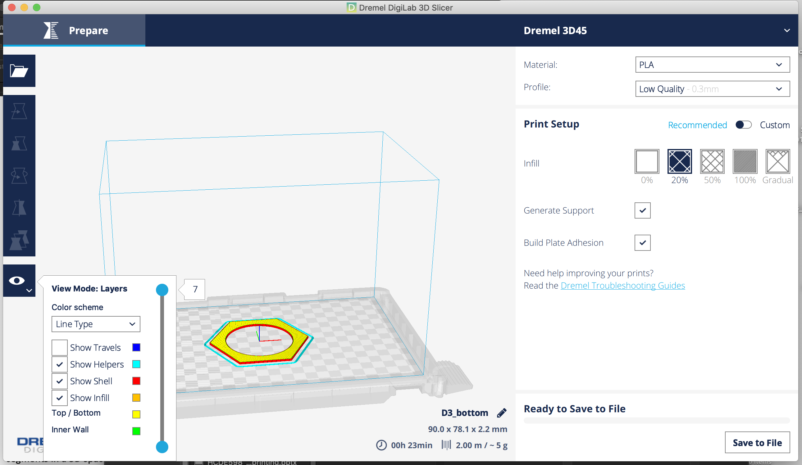

Assignment 3: 3D printing + lasercutting lamp!
Process
First time using a 3D printer and it was exciting to see things drawn on a computer show up in front of my eyes (eventually!)
Design and execution
I decided to design this assignment’s lamp around a hanging LED lamp from Amazon. The intent is to create a desktop lamp.
Knowing that there’s a flat base on the original lamp, the idea was to build a platform that the lamp will sit on and then add elements to create the lampshade for the overall lamp. I decided to extend the base of original hexagonal shape.
Within Rhino3D, I created a hexagon polygon that is slightly bigger than the original as a curve.
I then used the ExtrudeCrv and Cap commands to create a 3D surface. To reduce the amount of time it will take to 3D print the shape, instead of having the shape completely solid, I decided to cut an opening in the middle. Taking advantage of the circular lens that’s on the original light, I created a circle cutout that could be used to sandwich the light in between two layers to keep it in place.

The lampshade will be used to create the structure that will be used to sandwich the lamp to keep it in place. I created vertical support structures using laser cut from cardboard with notches that will hold the entire structure in place. The vertical structures were created in Rhino3D initially.

The shape was then further finetuned in Adobe Illustrator to tweak the size and line thickness so that it’s suitable for cutting on the laser cutter. Six of these were created on a laser cutter.
In Rhino3D, it was easy to model what the eventual lamp will look like.
With the base objects exported to .stl format, I imported them into Dremel DigiLab 3D Slicer so that they can be converted into a .gcode file for printing.

Two base objects were printed.
Once assembled with the LED light inside, the final product looks like the following.
Learnings
The 3D printer took much longer than expected. 3D printing a piece that was 90mm x 78.1mm x 2mm took close to 30 mins at Low Quality 0.2mm resolution on the Dremel 3D45 printer. This meant it was crucial to get the design correct on the first try.
It was important to specify the dimensions when importing .stl files to Dremel so that the objects were the same size as in Rhino3D. Again, transferring objects from application to application can sometimes be tricky.
I tried using UnrollSrf command to unroll a surface as a flat surface so that it can be 3D printed as shown during class to create a lampshade made up of a repeated pattern layered on top of a surface. Unfortunately, I ran into issues with extracting a surface. More experimentation required to get this right.
Source files
Rhino3D of lamp: assignment3.3dm
Bottom plate .stl file: assignment3-bottom.stl
Bottom plate .gcode file: assignment3-D3_bottom.gcode
Lampshade support file for laser cutting: assignment3-connectorpiece.ai
Laser cutter settings the lampshade cardboard: 50% speed/75% power/50% freq
Thanks!
Thanks to Hannah (@hcnursalim) for her help with transferring .stl files from Rhino to Dremel.